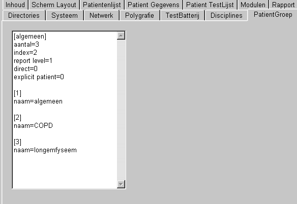

Rapport (klassiek)
Er kan een patiënt rapport worden afgedrukt, waarin alle of een deel van de uitgevoerde testen kunnen worden opgenomen.
Het rapport kan worden voorzien van een eigen logo en titels. De fonts kunnen per groep naar eigen inzicht worden ingesteld.
Voordat het feitelijk afdrukken begint, wordt altijd een preview (zoals hieronder aangegeven) op het scherm gegeven.
Bij sommige modulen is het mogelijk om vanuit een module het rapport te printen, in dat geval betreft het enkel een rapport van de betreffende test, tevens voorzien van alle algemene patientgegevens.
In de TestOrganizer kunnen de algemene gegevens als logo en titels worden opgegeven, via Instel / tabblad Rapport.
Tevens kunnen bepaalde gegevens worden onderdrukt, door de betreffende afvink-vakjes uit te zetten, zie onderstaand scherm.
Het logo wijzigen kan ook door op het logo te klikken.
Na het indrukken van de knop print verschijnt het onderstaande scherm.
Door het overhalen van testresultaten van links naar rechts worden de geselecteerde testen opgenomen in het rapport. Middels een aantal extra knoppen kunnen ook alle afgenomen testen van de laatste week, laatste 4 weken en laatste jaar in 1 keer worden overgehaald.
Bij bepaalde modulen kunnen rapporten worden gemaakt, waarvan de inhoud afhankelijk is van de behandelende discipline en / of de medische vraagstelling. Indien meerdere disciplines worden aangekruist, worden ook meerdere rapporten afgedrukt (de voetnoot van een rapport bevat voor wie het rapport is bestemd.
Tevens kan bij bepaalde modulen het gewenste nivo van het rapport worden aangegeven (alleen het eindresultaat of ook tussenliggende gegevens).
Rechstonder zijn nog de volgende aankruisvakjes:
Direct printen, er wordt geen preview van de rapporten getoond, maar de resultaten worden direct afgedrukt op de printer.
Vragenlijst in patientvorm: zie hieronder
|
Rapport afhankelijk van discipline Sommige modulen (bijvoorbeeld vragenlijst module) kunnen de inhoud van een rapport variëren afhankelijk van de beoordelende discipline. De diciplines kunnen worden gewijzigd door het bestand "Disciplines.ini" (in de algemene programma - directory) aan te passen, volgens het voorbeeld aan de rechterzijde. Nadat het bestand is gebruikt door de TestOrganizer, zullen in dit bestand extra gegevens worden opgenomen. Laat als gebruiker deze extra gegevens altijd ongemoeid. BELANGRIJK: bij het gebruik in bijvoorbeeld de vragenlijst module, worden deze gegevens niet textueel gebruikt, maar de volgorde wordt gebruikt !!! Bijvoorbeeld in de vragenlijst wordt opgeslagen dat de subschaal "Fatigue" alleen moet worden afgedrukt bij de eerste en derde discipline. Dus denk eerst na alvorens deze gegevens echt te gebruiken !! Wil men een discipline niet meer gebruiken, verwijder hem dan niet, maar geef hem desnoods een loze naam, zoals "niet meer in gebruik" of "-", zodat de volgorde van alle andere disciplines ongewijzigd blijft. Als toch eens onverhoopt de volgorde is gewijzigd, loop dan alle testen, waarin een discipline afhankelijke output wordt aangemaakt langs en controleer hierin deze discipline afhankelijke elementen. De disciplines kunnen ook worden ingesteld via de knop INSTEL van de TestOrganizer, zie plaatje hieronder. |
[algemeen] aantal=4 [1] naam=algemeen [2] naam=fysiotherapeut [3] naam=psycholoog [4] naam=longarts |
|
Rapport afhankelijk van vraagstelling Sommige modulen (bijvoorbeeld vragenlijst module) kunnen de inhoud van een rapport variëren afhankelijk van de medische vraagstelling. De vraagstellingen kunnen worden gewijzigd door het bestand "PatientenGroep.ini" (in de algemene programma - directory) aan te passen, volgens het voorbeeld aan de rechterzijde. Nadat het bestand is gebruikt door de TestOrganizer, zullen in dit bestand extra gegevens worden opgenomen. Laat als gebruiker deze extra gegevens altijd ongemoeid. Verder geldt hierbij net zoals hierboven, verander de volgorde niet en verwijder geen vraagstellingen, maar maak ze neutraal kwa tekst !!! De vraagstellingen kunnen ook worden ingesteld via de knop INSTEL van de TestOrganizer, zie plaatje hieronder. |
[algemeen] aantal=3 [1] naam=algemeen [2] naam=COPD [3] naam=longemfyseem |

Vragenlijst in patientvorm
Dit is de oude rapport manier (patientvorm), waarbij de vragen en antwoorden zo worden afgedrukt als de patient ze op het scherm krijgt.
Dit is het resultaat van dezelfde antwoorden op dezelfde vragen, maar nu in de nieuwe rapport vorm (NIET patientvorm), waarbij vragen en antwoorden een geheel andere tekst kunnen krijgen en vraag en antwoord zelfs op 1 regel kan worden geplaatst.
Na het drukken op de knop "Fonts", verschijnt het onderstaande instelscherm. Door op een paneel te klikken, kan het betreffende font worden ingesteld. Er zijn enkele fonts die niet expliciet kunnen worden ingesteld. De hoofdtitel van het rapport bestaat uit het normaal font, echter de grootte wordt met 4 punten verhoogd en het font wordt bold gemaakt. Zo ook de footer, deze bestaat uit header font 1, echter met een grootte van 6 punten.
Voor het instellen van fonts worden de volgende adviezen gegeven:
Op sommige oude printers en netwerk printers treden soms problemen op met voornamelijk fixed fonts. Raadpleeg in dat geval de gebruiksaanwijzing van uw printer om te bezien welke fonts ondersteund worden of probeer een ander (fixed) font.
NB het onderstaand voorbeeld hieronder geeft dus een slechte fontkeuze
aan.